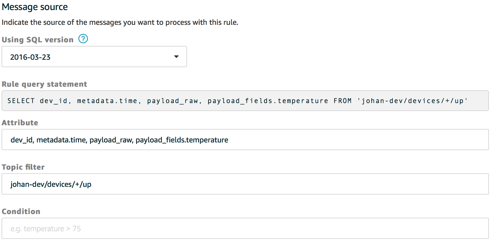
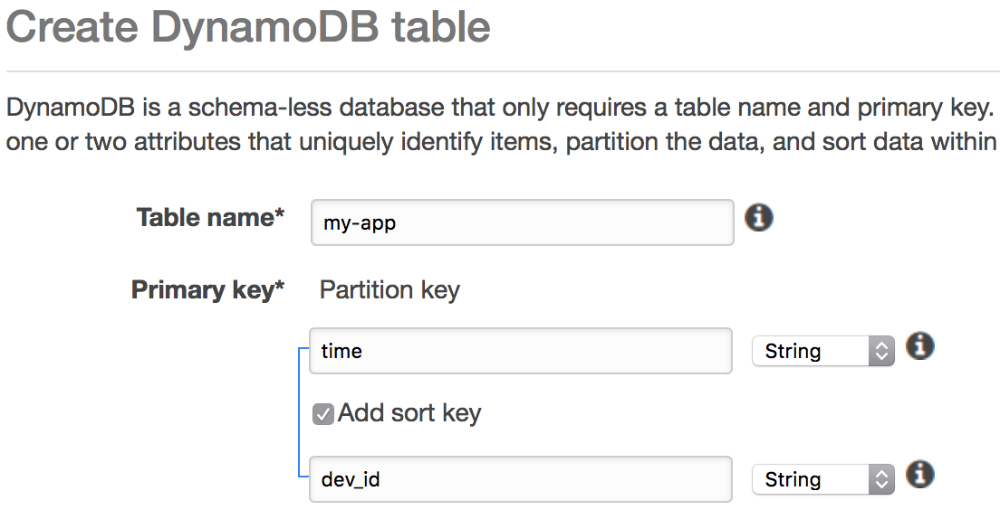

Act on Data
AWS IoT rules allow for filtering and routing uplink messages to many AWS services, including storing S3 files, sending push notifications through SNS, sending to SQS queues, invoking Lambda functions and many more. See Rules for AWS IoT for more information.
This guide walks you through storing uplink messages in AWS DynamoDB.
Store Data in DynamoDB
A common reason to use IoT platforms such as AWS IoT is to store uplink messages to analyze later. AWS comes with the highly scalable table-based storage service DynamoDB. This guide walks you through storing uplink messages to a AWS DynamoDB table.
- Log in to the AWS Management Console
- In Services under Internet Of Things, go to AWS IoT
- In the menu on the left, go to Act
- Click Create rule
- Enter a name for the rule, e.g.
store -
Under Message source, you can query JSON messages that are published on MQTT in a SQL-like format
- In Attribute, enter
dev_id, metadata.time, payload_rawto query the device ID, the time and the raw payload. You can add payload fields too, for examplepayload_fields.temperature - In Topic filter, enter
+/devices/+/up(see messages) - Optionally, in Condition, enter a filter. Leave blank to store everything

- In Attribute, enter
- Click Add action
- Select Split messages into multiple columns of a database table (DynamoDBv2)
-
Under Table name, click Create a new resource. A new browser tab opens
- Click Create table
- Enter any Table name, for example
my-app - As Partition key, enter
dev_id -
Optionally, check Add sort key and enter
timeto sort by time
- Click Create and leave this tab open
- Go back to the AWS IoT tab, and click refresh next to Table name
- Select your newly created table
- Click Create new role and enter
aws-iot-dynamodb, or update an existing role to grant access from AWS IoT to the DynamoDB table - Click Add action
- Click Create rule
- Go back to the DynamoDB table tab, and go to Items
-
Click refresh to view your stored data: